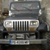

Dimineaţa în parcare, detectivul bucureştean nu stă cu faţa la soare, ci cu nasul sub maşină. “Oare mi-au tăiat furtunul de la rezervor ca să-mi fure benzină sau de data asta au luat doar oglinzile?”, se întreabă el testându-şi flerul şi experienţa.
Dezlegarea misterului (da, au vrut benzina) îl conduce spre următoarea enigmă pe care o întâlneşte în primul tramvai, autobuz sau troleibuz în care se suie: oare domnul cu privire pofticioasă care îl pipăie pe la spate îi caută telefonul sau portofelul? Dacă detectivul nostru ar fi fost femeie, n-ar fi avut această dilemă.
Ajuns la birou, investigatorul se aşază la calculator cu o cafea fierbinte în faţă, dar nu se poate apuca de lucru cu spor pentru că întrebările nu-i dau pace: oare zbârnâitul care îi sfredeleşte creierul e de la aerul condiţionat sau de la şantierul de peste drum? O singură privire aruncată pe geam îl demască pe ucigaşul nervilor lui: RADET lucrează la modernizarea aceleiaşi reţele pe care a reparat-o anul trecut şi pe care o remediase acum doi ani, imediat după ce o montase acum trei, când a trebuit să schimbe ţevile învechite puse în funcţiune în urmă cu patru ani.
Se amuză totuşi văzând şi cum melteanul din biroul de alături se chinuieşte de vreo jumătate de oră să-şi înghesuie Jeep-ul înmatriculat la Plovdiv într-un spaţiu cât pentru un Tico, doar pentru că acela e singurul mai apropiat de intrare.
Secretele serii
Seara, după 10 ore de muncă, detectivul pleacă de la birou şi, din clipa în care iese pe uşă, plonjează într-un film Noir. Oare pe unde rătăcesc solicitările de înlocuire a becurilor stradale trimise către Luxten? Că la destinaţie sigur nu ajung!
N-are timp să caute un răspuns, că în bezna din lungul străzii se profilează un nou mister: oare cele trei mogâldeţe care se apropie în grabă sunt câini „comunitari” în căutarea unui os de ros (rotula, tibia, peroneul, n-au pretenţii) sau aurolaci în căutarea unui „şef”, „boss” ori „patron” pe care să-l tapeze de bani? Detectivul are nevoie de un indiciu. Îl găseşte sub forma unor chemări mieroase, venite dinspre balconul de la etajul trei al blocului învecinat. Siluetele umblătoare sunt căţeluşii pe care îi „are” o bătrână iubitoare declarată de animale. Pensionara e convinsă că dacă aruncă lături pe geam la ora mesei înseamnă că şi-a făcut datoria faţă de copilaşi.
Investigatorul bucureştean îşi şterge de pe reverul hainei resturile zburătoare de la cina stimatei doamne. Pui cu usturoi. Foamea îl îndeamnă să iuţească pasul spre un hipermarket din apropiere. Cumpărăturile merg mai încet decât se aştepta pentru că nici aici lucrurile nu sunt deloc simple: care o fi oare preţul corect dintre cele zece aranjate la întâmplare sub trei produse similare? Ce caută o conservă de mazăre între pijamalele flauşate? Şi, apropo de pijamale, e vreuna în raft cu cod de bare funcţional? Oare unde s-o fi ascuns cititorul de preţuri? Sau vânzătoarea de la raionul de brânzeturi?
Ajuns aproape acasă, detectivul mai are de trecut un ultim obstacol: vecinul de palier. Oare cum să iasă din lift şi să bage cheia în broască fără să deştepte curiozitatea vigilentă a domnului mereu doritor de conversaţie? Nu mai apucă să aplice vreo stratagemă, pentru că uşa apartamentului de alături e se deschide, parcă aşteptându-l:
«Bună seara! Aţi venit de la serviciu? Aşa târziu lucraţi? Aţi fost la cumpărături? Văd că aţi luat multe! Nu v-am mai văzut de ceva vreme. Credeam că sunteţi plecat din oraş, dar aveaţi maşina în parcare şi m-am gândit că trebuie să fiţi acasă. Soţia ce mai face? M-am întâlnit cu dânsa ieri şi părea cam palidă. E bolnavă? Să ştiţi că şi eu am avut palpitaţii zilele astea de când…»
Dar eroul nostru nu mai vrea să ştie nimic. Mormăie ceva în chip de scuză, se opinteşte să intre cu toate plasele deodată în propria locuinţă şi trăieşte extazul în secunda în care trage zăvorul uşii. În sfârşit, tihnă.
Misterul din casă
Se prăbuşeşte pe fotoliul din sufragerie, visând la o baie bună şi o friptură aburind. Oare RADET-ul s-o milostivi cu nişte apă caldă? Soţia vine bosumflată din bucătărie: „iar n-avem gaze! Revizie până mâine la prânz. Sper că ai luat şi tu nişte conserve măcar”.
Nu-i nimic, se resemnează detectivul. Linişte să fie. Din păcate maneliştii din cartier sunt de altă părere: „Dă mai tare vere, să moară toţi duşmanii mei. I-auzi, ia … Ce noapte norocoasă, suntem cu toţi acasă ….”
Da, e acasă. În Bucureşti, oraşul oportunităţilor, urbea care transformă orice locuitor banal într-un detectiv neobosit.


{kind=link}
{kind=link}
si cand da drumul la televizor, are doar OTV cu dan diaconescu, nu?:)) chinuita viata. e mai liniste la noi, in dulcele tirg al iesilor, desi nu ducem lipsa de mirlani.
Comments on this entry are closed.